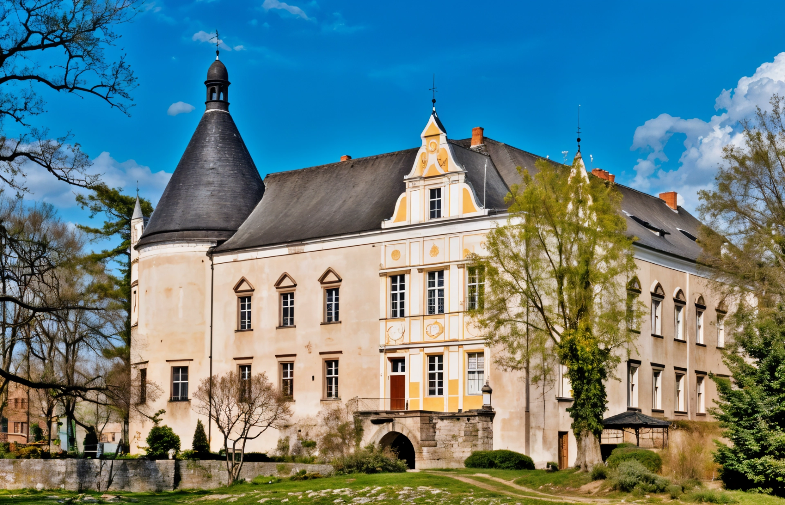

BMC Sp. z o.o.
founded in 2015 in Poland
BECCS by best ecological and economic Waste to Energy
Among other things, the Palace Foundation offers also,
even to some of the companies involved in the BMC project,
a residence possibility as well as work and conference rooms and service.
It is about a global breakthrough in waste recycling and thus a realization of BECCS will be worldwide possible.
powered by BMC Sp. z o.o.

About Founder
Prof. Dr.- Ing. Hubert Boeckmann
Founder + Majority Shareholder + CEO
born Mai 10.1946 in Germany, received one of the best university degrees as a Dipl.-Ing. (Business−) and as a Dr.-Ing. from the Technical University of Berlin (FB 16 - department mining + earth sciences).
Has been active/working about 20 years in academic − teaching, research and consulting at the Technical University of Berlin and the University of Applied Sciences Westkueste in Heide/Germany. Academic main fields were: Thermodynamics and Mechanical-Engineering and Ergonomics and Logistics in special with material−handling and management as well as production- and energy- systems.
Has about another 20 years of experience of working in medium−sized and large companies; working in highest level management positions and executive boards. Had the responsibility for up to about one billion Swiss Francs p. a. of business volume as well as planning and reorganization volume up to 100 million € as a service provider and in the entire value chain from procurement and acquisition through production to distribution.
After reaching retirement he uses his connections and knowledge to engage in very special and big projects which generally effects worldwide sustainability and founded for this his own company BMC Sp. z o.o. in Poland. With no strange money the projects are developed by different BMC working groups as consortiums.
Project →
 Bild. TEAM, ACTIVITIES, xxx.webp)
With a globally enforceable Unique Selling Proposition USP, following Key Advantages for Investors & Plant Operators becomes possible:
(Compared to waste incineration)
- Optimal valorization of residual waste
- Decoupling of the thermal and electrical outputs
- Doubling net electrical efficiency of the power plant
- World-leading potential for negative carbon emissions through BECCS
- Capable of base and peak load and very strong energy balance in grid
THE NEWLY DEVELOPED PROCEDURE IN A SIMPLIFIED PRESENTATION

We have developed a new process based solely on long-established, state-of-the-art components and systems. It is a prototype concept with a validated mass and energy balance, where only the component interconnection and the use of pyrolysis oil in the Two-Stroke marine diesel engine are novel. The two companies, developing these engines, began corresponding trials as early as 1994/95 and currently confirm its feasibility. Both developers said: necessary injection systems would be supplied to our licensees. Based on available documentation and discussions, we anticipate that the TRL (Total Readiness Level) of the developer trials will be 5.
Available for this process is a publication
"A Quantum Leap for Waste and BECCS with B-VM Power Plant"
https://www.intechopen.com/online-first/1193521
SUPPLEMENTED WITH THE FOLLOWING FOUR ILLUSTRATIONS
1. Data on output of pyrolysis: (Energy instead weight-%)

Figure 5+: Stabilat product fractions in the output of the rotary kiln as energy [7]

Figure 5++: Beech product fractions in the output of the rotary kiln as energy [7]
2. Data on the efficiency of waste incineration in Germany
It is important that the waste incinerated in Germany has a residual moisture content of about 25%. Globally, higher moisture content values reduce efficiency.

Figure 5+++: Electrical and total efficiency of German waste incineration plants 2012 – 2016. [10]

Figure 5++++: Net efficiency of RDF power plants in Germany 2012 - 2016. [10]
3. Use of the HERHOF process and our own process
During development of the waste treatment upstream of the B-VM, it became apparent that, with regard to all parameters to be complied with for the treated waste, there were mainly usable standard units but also partial systems on the market. In the most aspects, this is not ultimately about pyrolysis processes with further development, but only about improving thermal utilization - in particular by means of incineration and gasification. Otherwise the production process for the HERHOF TROCKENSTABILAT® has been investigated to the greatest extent and depth. However, it has been ultimately not able to establish for incineration or gasification. Nevertheless, all these studies provide largely and precisely almost all the data required for the processing of waste and for pyrolysis with the B-VM.
The fact is that our existing, completely new treatment process developed by us for the B-VM, with its key areas works in a more targeted and economical way than HERHOF. But using HERHOF it is not necessary to disclose our newly designed process sequences and, in some cases, systems and aggregates, thereby jeopardizing patent protection.
Based on a typical waste composition for Central Europe with essential material data, the upstream waste treatment suitable for a 14 MW engine was designed using units and systems offered and adapted on the market. A completely new in-house development was then also carried out for special areas and circumstances, as nothing similar was available on the market. On this basis, it is possible realizing required local systems worldwide with its appropriate adaptations. For a designed upstream waste treatment, agreements were made with well-known manufacturers and different offers were obtained, with which CAPEX and OPEX were calculated.
For the first pilot plant with a specified location, it is planned that the upstream waste treatment system will be built as a turnkey complex together with one or two system providers – both worldwide very experienced companies.
4. Possible data on the worldwide use of the B-VM process
Some world B-VM data derived by a project with a 14 MW Motor in the Czech Republic. The data can used globally for example to regions like Europe, America, China or single countries or similar, based on the existing waste capacity and its utilization; but all values are only placeholder for the actual values in each location.
1: Net electrical output of a plant with 14 MW engine is 10 MW into grid; during 8,000 h/a; (with 80 MW motor possible about 57 MW)
2: Currently around 15,000 such 14 MW systems in 2050; (based in pos. 5:)
3: Feasible to extract about -0.75 billion t/a of CO2 in 2050; (≈ 15 % from value postulated by IPCC and NAS)
4: With capex of around € 120 million/14 MW plant incl. BCC; (Bioenergy with Carbon Catching)
5: Average in 2050 is 1 billion t/a used waste + 1 billion t/a biomass; (World waste: 2 Billion t in 2016 and expected 3.8 Billion t in 2050)
With a CO2 price of € 100/t, this would be around 75 Giga €/a.
The 15,000 plants of 10 MW output, results in 150,000 MW capacity (it corresponds to around 150 large power plants - but decentralized in 15.000 locations). With 8,000 h/a, 1.2 Giga MWh of electricity can produce annually and with 100 €/MWh this results in 120 Giga €/a.
With an average of 100, - €/t waste, total of 100 Giga €/a is generated.
Further revenues are generated: from the processing of delivered waste (like extracted recyclable materials) and for the thermal energy supplied.
A total world capex of 15,000 plants x € 120 million will be required (results in € 1,800,000 million; = € 1,800,000,000,000; = 1,8 Tera €). This is a safe investment that also pays off. In contrast to investments in fossil fuels, which are running at roughly same level worldwide and are expected to continue from 2020 for almost 10 years up to 2030. But these could prove to be a gigantic speculation error due to the increasing competition from renewable energies.
We are currently preparing the realization of a first pilot plant and a worldwide implementation of the technology.
[Among other things, the palace foundation is able provide offices and social- and conference- rooms and different workshop- areas for companies.]
Imprint
You can reach us here:
BMC Sp. z o.o.
Nip: 6112738079
Regon: 360753539
Founded in 2015
E-Mail:
HuBoe@BECCS-by-best-WtE.com
Phone:
+48 661 781 056
+49 172 435 2315
Address:
Czernica 102 (Palace), 58-521 Jeżów Sudecki
Polen
Responsible for the Website:
Lukas Malinowski
lukas@palacczernica.pl
Contact Us
If you wish to contact